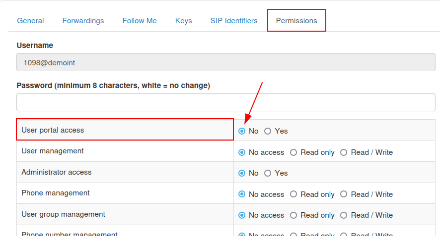

Gestionar usuarios en Axivox¶
La gestión de usuarios Axivox VoIP es una parte importante de la configuración de VoIP en una base de datos Odoo. Cada usuario Axivox tiene un nombre único, número de teléfono o extensión, y un buzón de voz. De esta manera, tenemos muchas maneras de localizarlos.
Los usuarios Axivox se organizan de una forma simple y directa en la consola de Axivox, así que un administrador puede gestionar usuarios rápido y sin problemas.
Nota
Esta documentación habla sobre cómo configurar todo a través del proveedor Axivox. Dependiendo del proveedor VoIP es probable que el proceso para gestionar usuarios sea diferente.
Información general¶
Primero debe ir a la consola de gestión de Axivox en https://manage.axivox.com. Inicie sesión con las credenciales de administrador correctas.
Nota
Para que los cambios se apliquen las acciones en la consola de gestión se deben guardar dos veces. Para guardar cualquier cambio, haga clic en Save (guardar) en los cambios individuales en la pantalla. Después, para implementar esos cambios, haga clic en el botón Aplicar cambios en la esquina superior derecha de la consola.
Números entrantes¶
Los números entrantes son todos los números que una empresa paga para usarlos y para recibir llamadas.
Haga clic en (números entrantes) en el menú de la izquierda de la consola de gestión Axivox. Al hacerlo, aparecerá la página (números entrantes), donde se enumeran todos los números entrantes, junto con su Destino y la información de SMS.
El destino determina la acción que se debe tomar, o el camino que la persona que hace la llamada debe seguir al llamar a estos números.
Para editar el Destino, haga clic en el botón Edit (editar) situado en el extremo derecho de la línea del número entrante que desea modificar. A continuación, en la página Edit number (editar número) que aparece, se puede cambiar el Destination type for voice call (tipo de destino para una llamada de voz).
Las opciones disponibles en el menú desplegable Destination type for voice call (Tipo de destino para llamada de voz) son las siguientes:
Not configured (no configurado)
Extension (extensión)
Dial plan (plan de marcación)
Voicemail (buzón de voz)
Hang up (colgar)
Conference (conferencia)
Dependiendo de la selección realizada en el menú desplegable Destination type for voice call (tipo de destino para una llamada de voz), se rellena un segundo menú desplegable específico de la selección con más opciones de configuración. Además, se muestran más campos en función de la selección realizada en el menú desplegable Destination type for voice call (tipo de destino para una llamada de voz).
Una vez que las configuraciones estén completas, haga clic en Guardar y luego haga clic en Apply changes (aplicar cambios) en la esquina superior derecha para implementar los cambios.
Nuevos usuarios¶
Cada empleado que utilice VoIP en la empresa necesita una cuenta de usuario Axivox asociada a él.
Para ver los usuarios existentes en la consola de gestión Axivox haga clic en Users (usuarios) en el menú de la izquierda de la consola. Cada usuario tiene un número, nombre y la opción de tener un buzón de voz y un número de salida específicos.
Para crear un usuario nuevo en la consola de Axivox, haga clic en Add a user (agregar un usuario) para mostrar un formulario de New user (usuario nuevo). Las siguientes pestañas están disponibles para configurar el nuevo usuario:
General (general): se puede configurar información básica, incluyendo la extensión del usuario.
Forwardings (reenvíos): reenvíos internos ante señales de «no contesta» u ocupado.
Follow Me (sígueme): configuración de reenvío externo.
Keys (teclas): establezca teclas de acceso rápido dentro del sistema VoIP.
SIP Identifiers (identificadores SIP): el nombre de usuario y contraseña SIP para configuración externa.
Permissions (permisos): configura permisos de acceso para usuarios en la consola de gestión de Axivox.
Pestaña general¶
En la pestaña General «general» del formulario New user (usuario nuevo) vaya al campo Extension (extensión) e ingrese una extensión que sea única para el usuario. Este es el número que los usuarios internos tendrán que marcar para poder hablar con ese empleado en específico.
En el campo Name (nombre) ingrese el nombre del empleado.
Después, llene el campo Email address of the user (dirección de correo del usuario). Aquí se debe agregar una dirección de correo válida para el empleado, donde el usuario recibirá correos electrónicos.
En el campo GSM number (número GSM) ingrese un número alternativo con el se puede comunicar con el usuario. Asegúrese de incluir el código del país.
Nota
Un código del país es un código de ubicación que permite acceso al sistema telefónico del país deseado. Primero se marca el código del país y después el número deseado. Cada país tiene su propio código de país específico.
Para consultar una lista completa de códigos de país vaya a https://countrycode.org.

En el campo buzón de voz seleccione ya sea Yes o No (sí o no) desde el menú desplegable.
El administrador puede dejar el campo Directorio vacío al no hacer ningún cambio o seleccionar Predeterminado en el menú desplegable. El directorio se usa con la función Recepcionista virtual del plan de marcación.
Al final de la pestaña General hay dos opciones separadas donde hay unas cajas de selección.
La primera opción es This user can receive multiple calls at the same time (este usuario puede recibir varias llamadas al mismo tiempo). Al seleccionar esta opción, los usuarios pueden recibir llamadas aunque estén en otra llamada.
La segunda opción, This user must log-in to call (este usuario debe iniciar sesión para llamar), hace que sea obligatorio que un usuario inicie sesión.
Nota
Si una empresa usa teléfonos físicos de VoIP en los escritorios y quiere que sus empleados inicien sesión desde cualquier teléfono o escritorio en la oficina, deben seleccionar This user must log-in to call (este usuario debe iniciar sesión para llamar).
Una vez que las configuraciones estén completas, haga clic en Guardar y luego haga clic en Apply changes (aplicar cambios) en la esquina superior derecha.
Pestaña de desvíos¶
En la pestaña Forwardings (desvíos) del formulario de New user (usuario nuevo) una empresa puede decidir qué pasa si alguien llama a un usuario y la llamada no se responde.
Importante
Los desvíos se desactivan cuando la opción Follow Me (sígueme) está activa.
Por ejemplo, en el campo Forwarding on no answer (desviar la llamada cuando no se responde) cuando se selecciona el botón Add a destination (agregar un destino) se mostrará la opción para agregar un usuario o un número de teléfono específico. Después de ingresar el Destination (destino) puede seleccionar un periodo específico, solo tiene que arrastrar la barra de segundos al tiempo de espera deseado.
Destinations (destinos) adicionales se pueden agregar en diferentes tiempos de espera.
Nota
Los tiempos de espera se pueden escalonar, así la llamada se desvía a otro usuario después de que el primer usuario no responda la llamada. La opción de Send to voicemail as a last resort (enviar al buzón de voz como última opción) está disponible para los administradores, si los Destinations (destinos) no responden.
En el campo Forwarding on busy (desviar si está ocupado) un administrador puede Add a destination (agregar un destino). Al hacer clic, pueden configurar el Destination (usuario de destino). Si la extensión VoIP o el número entrante, están ocupados, la llamada se desvía al o los destinos.

Cuando las configuraciones estén completas, haga clic en Guardar y luego haga clic en Apply changes (aplicar cambios) en la esquina superior derecha de la página.
Pestaña de Follow me¶
Cuando se selecciona la opción Follow Me (sígueme) en la pestaña Follow Me (sígueme) del formulario New user (usuario nuevo), no se pueden realizar (desvíos).
Cuando se selecciona la opción Follow Me (sígueme) puede dar clic en el botón Add a destination (agregar un destino) para agregar usuarios o un teléfono de destino que lleve a la cuenta original del usuario. De esta manera, estos números sonarán cuando se reciba la llamada.
Después de ingresar un Destination (destino) se puede hacer un periodo especifico, solo se tiene que arrastrar la barra de segundos al tiempo de espera deseado. Los Destinations (destinos) adicionales se pueden agregar en diferentes tiempos de espEra.
Nota
El número de VoIP no suena cuando esta opción se selecciona. Los tiempos de espera también se pueden escalonar, así que la llamada se desvía a otro usuario después de que el primer usuario no responda la llamada.

Importante
La aplicación móvil de Odoo, o cualquier otro cliente móvil de SIP, permite que la extensión de un cliente pueda sonar varias veces. Para más información vaya a la documentación VoIP Mobile Integrations.
Una vez que las configuraciones estén completas, haga clic en Guardar y luego haga clic en Apply changes (aplicar cambios) en la esquina superior derecha.
Pestaña de teclas¶
En la pestaña Keys (teclas) para el formulario New user (usuario nuevo) puede configurar los atajos de teclas para el usuario. También están disponibles algunas opciones avanzadas.
Las siguientes opciones están disponibles para configurar valores numéricos 1-20.
Estas acciones se pueden configurar en cada número:
Not configured (sin configurar): la acción predeterminada, que es nada.
BLF (Busy lamp fields): esta acción muestra el estado del teléfono de otros usuarios que están conectados al sistema de teléfono Axivox. Esto se usa principalmente en los teléfonos de escritorio.
Quick Call (llamada rápida): esta acción permite que se pueda hacer una marcación rápida de un número externo.
Line (línea): esta acción permite que los usuarios llamen a otros usuarios.
Switch (cambiar): esta opción permite que los usuarios cambien entre llamadas desde un teléfono de escritorio.
Pickup (responder): esta acción permite que el usuario responda una llamada entrante desde un teléfono de escritorio.

Una vez que las configuraciones estén completas, haga clic en Guardar y luego haga clic en Apply changes (aplicar cambios) en la esquina superior derecha.
Importante
Mucha de las opciones anteriores tienen disponibles opciones secundarias que se pueden usar para vincular a un usuario, o a un número externo. Estas deben llenarse junto con la acción inicial.
Nota
El campo Number of keys (número de teclas) se puede cambiar, solo tiene que ingresar el valor numérico deseado en el campo Number of keys (número de teclas) ubicado en la parte superior de la pestaña Keys (teclas) en el formulario New user (usuario nuevo).
Pestaña ade identificadores SIP¶
SIP, que son las siglas en inglés de Protocolo de inicio de sesión, permite que se hagan y reciban llamadas desde una conexión a internet. La pestaña identificadores SIP en el formulario New user (usuario nuevo) contiene las credenciales que se necesitan para configurar a los usuarios Axivox en Odoo o en un cliente móvil SIP diferente.
Ver también
Vea la documentación sobre cómo configurar Axivox usando los identificadores SIP:
En la pestaña indentificadores SIP el campo nombre de usuario SIP representa la información del usuario que se ingresó en el campo Extensión en la pestaña General.
El campo Domain (dominio) se le asigna a la empresa a través de un representante de Axivox.
El valor en el campo SIP Password (contraseña SIP) es único para cada usuario de Axivox. Este valor se usa para iniciar sesión en Axivox con Odoo y para clientes móviles de SIP

El valor enlistado en el campo Dirección del servidor proxy usualmente es pabx.axivox.com, pero está a sujeto a cambios por Axivox, así que asegúrese de revisar la pestaña SIP Identifiers (identificadores SIP) para obtener un valor correcto.
Una vez que las configuraciones se hayan realizado, haga clic en Guardar y luego haga clic en Apply changes (aplicar cambios) en la esquina superior derecha.
Pestaña de permisos¶
En la pestaña Permissions (permisos) del formulario de New user (usuario nuevo) puede ingresar un Username (nombre de usuario) y Password (contraseña) para el usuario.
Abajo de esos campos, puede otorgar los siguientes permisos a los usuarios de Axivox para el portal de acceso:
User portal access (acceso del usuario al portal)
User management (gestión del usuario)
Administrator access (acceso de administrador)
Phone management (gestión de teléfono)
User group management (gestión del grupo de usuarios)
Phone number management (gestión del número de teléfono)
Dial plan management (gestión del plan de marcación)
Pickup group management (gestión del equipo de respuesta)
Switch management (cambiar gestión)
Conference management (gestión de conferencia)
Queue management (gestión de cola)
Voicemail management (gestión del buzón de voz)
Audio messages management (gestión de mensajes de audio)
Music on hold management (gestión de la música de espera)
Directory management (gestión del directorio)
Call list (lista de llamadas)
Connected user list (lista de usuarios conectados)
Global settings (ajustes globales)
Apply changes button (botón de aplicar cambios)
Invoice download (descargar facturas)
Invoice details (detalles de las facturas)
Blacklist management (gestión de la lista de exclusión)
Conference participant management (gestión de los participantes de la conferencia)
Para acceder a las credenciales del portal de usuarios Axivox, navegue hasta la parte superior de la pestaña (permisos). A continuación, copie la Username (nombre de usuario), e introduzca la Password (contraseña) correcta para el usuario individual. Hay un mínimo de 8 caracteres para una contraseña de usuario.
Nota
Estos son los mismos permisos que se le dan al administrador de Axivox y que se enlistan en el menú de la izquierda de la consola de gestión Axivox. Si un estado es No o No access (sin acceso) entonces el menú de opción no se llenará para el usuario.
Una vez que las configuraciones estén completas, haga clic en Guardar y luego haga clic en Apply changes (aplicar cambios) en la esquina superior derecha.
Al terminar de configurar un usuario nuevo, puede vincular un Números entrantes.
Grupos de usuarios¶
Un grupo de usuario es una agrupación de usuarios de Axivox que se pueden vincular a la cola para el centro de llamadas.
Para empezar a usar grupos vaya a https://manage.axivox.com <https://manage.axivox.com>`_.
Después, inicie sesión con las credenciales de administrador apropiadas. Desde el menú en la izquierda del panel de administración de Axivox, haga clic en User Groups (grupos de usuario).
Para agregar un grupo de usuarios desde la página User Groups (grupos de usuarios) haga clic en Add a group (agregar un grupo).
A continuación, asigne un nombre al grupo introduciendo texto en el campo Name (nombre). Después, añada un miembro al grupo escribiendo las primeras letras del nombre del usuario en el campo Members (miembros). El usuario aparecerá en un menú desplegable debajo del campo. Haga clic en el usuario deseado y se añadirá al grupo de usuarios.
Repita este proceso para agregar más usuarios al grupo.
Una vez que las configuraciones estén completas, haga clic en Guardar y luego haga clic en Apply changes (aplicar cambios) en la esquina superior derecha.